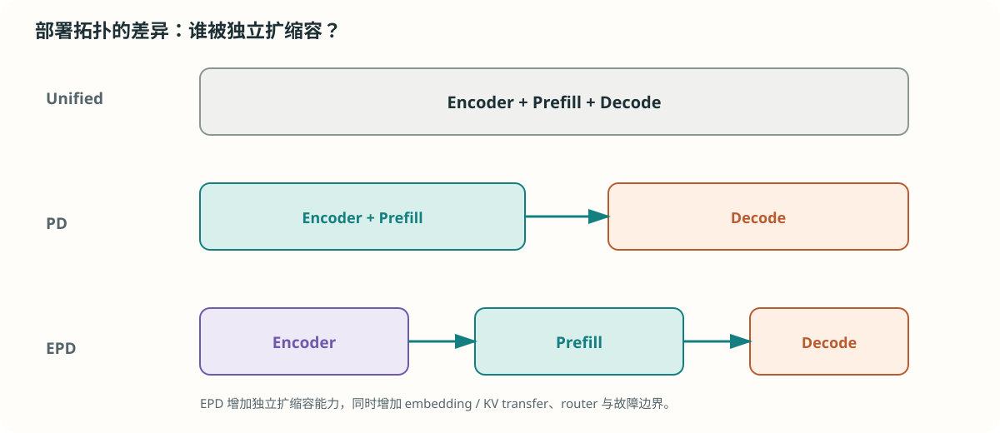
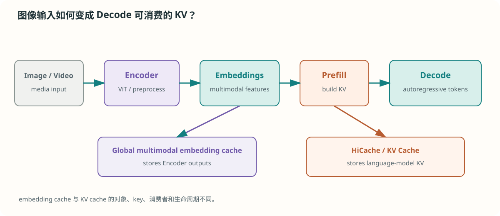

第 15 章 · 多模态分离部署
EPD Disaggregation：多模态 Encoder、Prefill 与 Decode 解耦
从 VLM 图像编码开始，理解 EPD 三阶段架构、embedding/KV 传输与独立扩缩容。
PD 分离解决 Prefill 与 Decode 计算形态不同的问题；多模态请求还包含视觉 Encoder。EPD 将 Encoder 独立出来，让三个阶段分别部署和扩缩容，同时引入 embedding transfer、router 与更多故障边界。
读完本章，你应该能
- 解释核心架构与数据流。
- 区分官方实现、研究背景与教学抽象。
- 使用 CPU toy 实验验证关键边界。
1. 为什么在 PD 之外还需要 EPD？
PD 分离解决 Prefill 与 Decode 计算形态不同的问题，但 VLM 请求还包含视觉预处理与 ViT 编码。若 Encoder 与语言 Prefill 共置，图像密集负载会让视觉与语言计算争用资源。EPD 再把 Encoder 独立出来，让 Encoder、Prefill、Decode 分别部署与扩缩容。
2. 三个阶段各自负责什么？
- Encoder：视觉预处理与 ViT 等计算，产生多模态 embeddings。
- Prefill：把文本与 encoder embeddings 纳入语言模型输入，初始化语言 KV Cache。
- Decode：读取 KV Cache，自回归生成后续 token。
拆分后可按瓶颈配置资源，但会增加跨服务传输与协调成本。
3. Unified、PD 与 EPD 的拓扑差异

Unified 共置三个阶段；PD 拆分 Prefill 与 Decode，但 Encoder 可能仍在 Prefill 一侧；EPD 再将 Encoder 独立出来。它们不是性能排行榜。
4. 多模态 embeddings 与语言 KV 如何传递

Encoder embeddings 传给语言 Prefill；Prefill 完成后才形成语言 KV，再按 PD 机制供 Decode 使用。
5. Encoder transfer backend 与启动拓扑
官方文档给出 --encoder-only、--language-only、--encoder-urls 等配置，并支持 zmq_to_scheduler、zmq_to_tokenizer 与 mooncake 等 transfer backend。典型 EPD 还会启动 --disaggregation-mode prefill 的 language-only worker、decode worker，再由 router 统一接入。
6. Global multimodal embedding cache 不等于 HiCache
基于 Mooncake 的 global multimodal embedding cache 可以复用重复图像的 Encoder embeddings；它缓存的是 Encoder 输出，不是语言模型 KV。HiCache 的对象是语言模型 KV，服务于前缀复用与 Decode 读取。两者可同时存在，但 key、格式、写入时机和消费者不同；encoder transfer 与 global embedding cache 也可独立配置。
7. 如何判断 EPD 是否值得部署？
简化的稳态吞吐模型受最慢 stage 限制：
独立扩容只有在对应 stage 是瓶颈且 transfer/router/queue 没成为新瓶颈时才有帮助。端到端时延还包括 Encoder、embedding transfer、Prefill、KV transfer、Decode 与排队。
8. 源码阅读路线
- EPD Disaggregation：角色、启动参数、transfer 与 embedding cache。
- encoder/server.py。
- encoder/preprocessor.py。
- multimodal_cache.py。
9. 交互：选择部署拓扑
Multimodal serving topology
Unified：三个阶段共置，部署简单但共享资源。
PD：Prefill 与 Decode 分离，Encoder 仍可能在 Prefill worker 内执行。
EPD：Encoder 独立扩缩容，embedding 传给 Prefill，KV 再交给 Decode；需要 transfer 与 router 协调。
运行 CPU toy stage-capacity model，观察 pipeline bottleneck。
10. 限制、故障边界与观测指标
- EPD 增加服务进程、endpoint、传输和故障域，不适合所有小流量或 text-only 负载。
- Encoder embedding transfer、Prefill worker 与 Decode KV handoff 会形成不同故障模式。
- 独立扩容可能提高资源利用率，也可能引入网络开销与排队。
- Global multimodal embedding cache 与 HiCache KV 指标必须分开监控。
评测需固定图像数量 / 分辨率、文本 token 数、输出长度和并发，分别记录 Encoder latency、embedding transfer、Prefill TTFT、KV transfer、Decode TPOT 与端到端 P95/P99。
11. 参考资料与版本边界
- SGLang EPD Disaggregation。
- Encoder server、Encoder preprocessor。
- Multimodal embedding cache。
- PD Disaggregation。
实现快照：sgl-project/sglang@ac0380c7faf9cece3ca32ffe75815af7c585acea。EPD 以官方工程文档与源码为依据，不虚构独立论文或性能倍数。